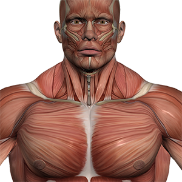

Изображения
Элемент img
Элемент img внедряет изображение в текущий документ в месте определения элемента. Элемент img не имеет содержимого — он замещается на ходу изображением, указанным в атрибуте src.
Задание 1. Вставьте на страницу изображение aquaria.jpg

Рисунок 1: Аквариум
Альтернативный текст
Атрибут alt предоставляет краткое описание изображения. Он содержит альтернативный текст, который отображается, если изображение не может быть выведено.
Задание 2. Вставьте на страницу изображение с ошибочной ссылкой slonn.png

Рисунок 2: Если картинка не загрузится, вы увидите этот текст
Размеры изображения
Атрибуты width и height задают размеры области изображения.
Задание 3. Вставьте на страницу изображение redcat.jpg с указанием его ширины и высоты.

Рисунок 3: Рыжий кот (300×200 px)
Адаптивные изображения (srcset + sizes)
Для добавления гибких (responsive) изображений используют атрибуты sizes и srcset.
Задание 4. Вставьте изображение гриба в зависимости от размера экрана:

Рисунок 4: Адаптивное изображение гриба
Подпись к изображению
Для группирования изображений и подписей используется элемент figure с figcaption.
Задание 5. Вставьте на страницу изображение globus.gif с подписью к нему.

Элемент picture
Элемент picture позволяет выбрать оптимальный формат изображения в зависимости от поддержки браузером.
Задание 6. Вставьте изображение html5-logo в формате SVG или PNG.
Оптимизация изображений
Современные форматы WebP и AVIF обеспечивают лучшее сжатие при сохранении качества.
Задание 7. Добавьте изображения в форматах WebP и AVIF:
